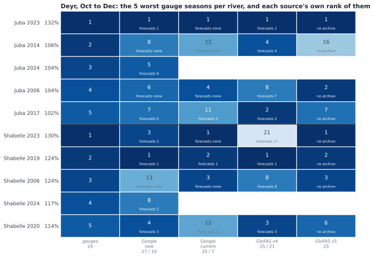
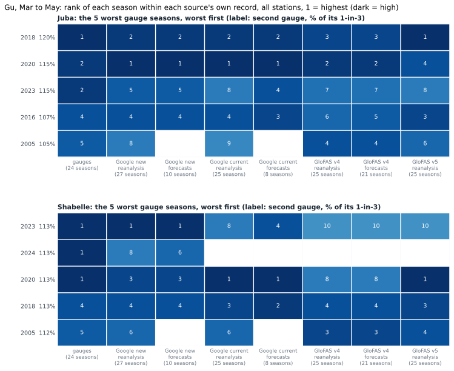
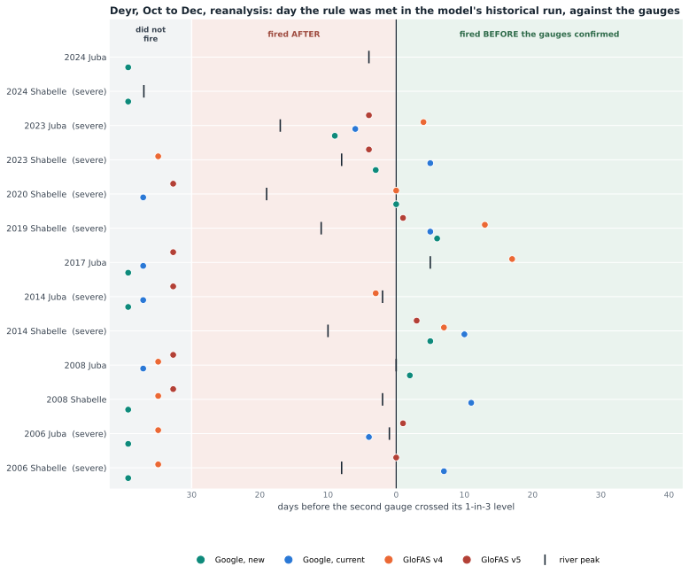
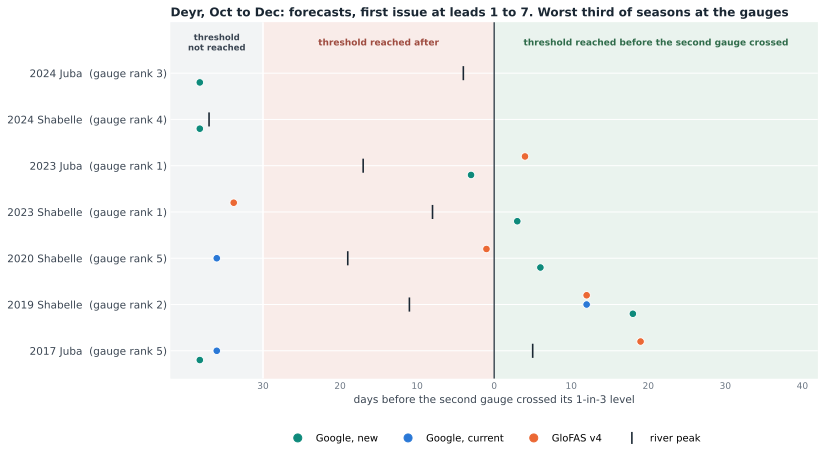
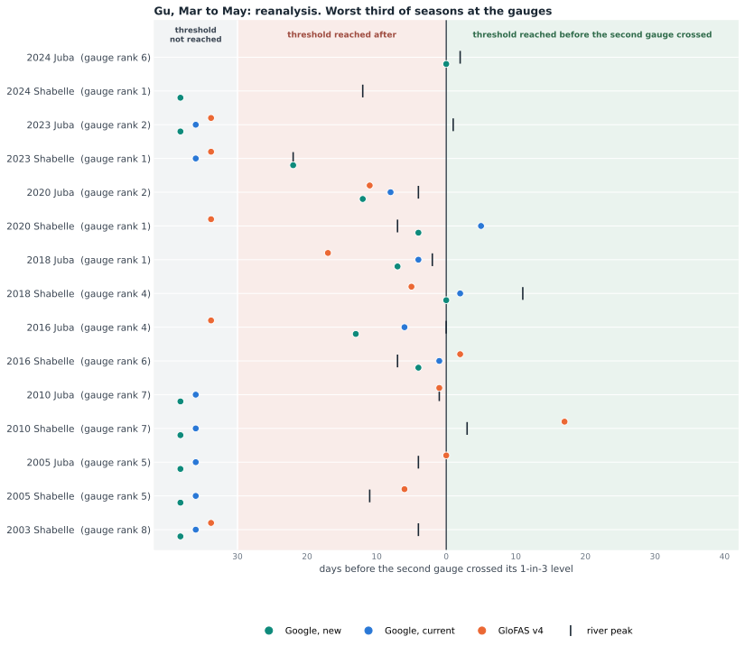
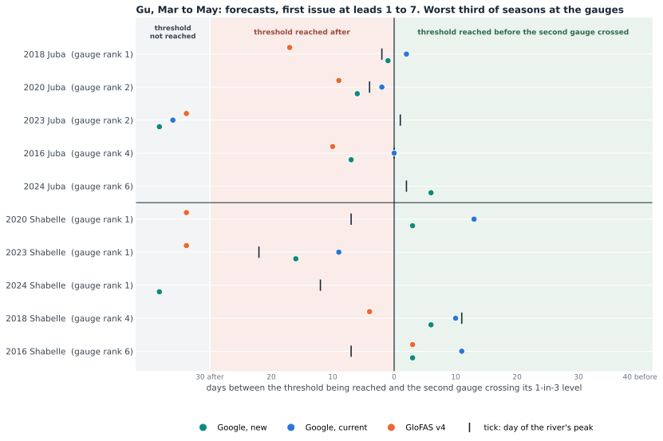
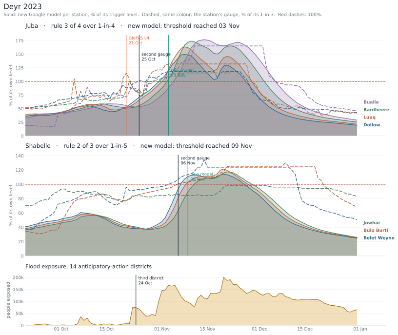
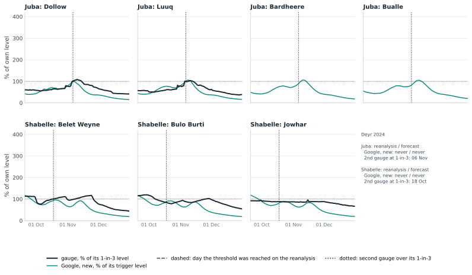
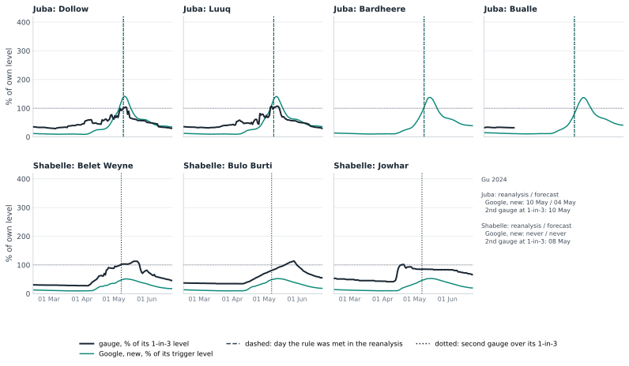

Threshold reached: three of the four Juba points, or two of the three Shabelle points, over their own level on the same day (Juba 1-in-4 and Shabelle 1-in-5 in Deyr, Juba 1-in-5 and Shabelle 1-in-6 in Gu, each model's own levels on its 1999 to 2023 seasonal maxima).
Reanalysis: the model's own record of the past. Forecasts: the first issue reaching the threshold at leads 1 to 7 days, what the live trigger reads. Archives: GloFAS v4 2003 to 2023, current Google 2016 to June 2023, new Google 2016 to 2025, GloFAS v5 none. Scores: 1999 to 2023 on the reanalysis, 2016 to 2023 on the forecasts.
Gauges: a flood is two SWALIM gauges on the river at their own 1-in-3 level, severe at 1-in-5. Gauge data run to July 2026.
1The worst floods first: the benchmark
The gauges' five worst seasons, worst first, and the rank each source gives the same seasons in its own record. A season's index is the level its second-highest station reached, as a share of that station's own 1-in-3 on that source.


2Deyr, season by season


| Source | Record | Juba | Shabelle | ||||
|---|---|---|---|---|---|---|---|
| severe caught | no gauge flood | F1 | severe caught | no gauge flood | F1 | ||
| Google, new | reanalysis 1999 to 2023 | 1 of 3 | 2 | 0.40 | 4 of 5 | 1 | 0.80 |
| Google, new | forecasts 2016 to 2023 | 1 of 1 | 2 | 0.50 | 3 of 3 | 0 | 1.00 |
| Google, current | reanalysis 1999 to 2023 | 2 of 3 | 2 | 0.57 | 4 of 5 | 0 | 0.89 |
| Google, current | forecasts 2016 to 2023 | 0 of 0 (to 2022) | 1 | n/a | 1 of 2 (to 2022) | 0 | 0.67 |
| GloFAS v4 | reanalysis 1999 to 2023 | 2 of 3 | 3 | 0.57 | 3 of 5 | 2 | 0.60 |
| GloFAS v4 | forecasts 2016 to 2023 | 1 of 1 | 0 | 1.00 | 2 of 3 | 0 | 0.80 |
| GloFAS v5 | reanalysis 1999 to 2023 | 2 of 3 | 0 | 0.80 | 4 of 5 | 0 | 0.89 |
Severe caught: of the severe seasons in the scoring span. No gauge flood: seasons with the threshold reached and no flood at the gauges. F1 combines the two; POD, FAR and the years are in data.json.
New model, Deyr 2024: threshold not reached on both records; gauges: Juba flood, Shabelle severe. Deyr 2025: threshold not reached on both records; gauges: Juba nothing, Shabelle nothing.
3Gu, season by season


| Source | Record | Juba | Shabelle | ||||
|---|---|---|---|---|---|---|---|
| severe caught | no gauge flood | F1 | severe caught | no gauge flood | F1 | ||
| Google, new | reanalysis 1999 to 2023 | 2 of 3 | 0 | 0.80 | 3 of 3 | 0 | 1.00 |
| Google, new | forecasts 2016 to 2023 | 2 of 3 | 0 | 0.80 | 3 of 3 | 0 | 1.00 |
| Google, current | reanalysis 1999 to 2023 | 2 of 3 | 1 | 0.71 | 2 of 3 | 1 | 0.71 |
| Google, current | forecasts 2016 to 2023 | 2 of 3 | 0 | 0.80 | 3 of 3 | 0 | 1.00 |
| GloFAS v4 | reanalysis 1999 to 2023 | 2 of 3 | 0 | 0.80 | 1 of 3 | 0 | 0.50 |
| GloFAS v4 | forecasts 2016 to 2023 | 2 of 3 | 0 | 0.80 | 1 of 3 | 0 | 0.50 |
New model, Gu 2024: threshold reached on the Juba on both records; gauges: Juba flood, Shabelle severe. Gu 2025: threshold not reached on both records; gauges: Juba no gauge record, Shabelle nothing.
4Timing against the gauges
The seasons in the worst third of the gauge ranking, one row per river and season. Zero is the day the river's second gauge crossed its 1-in-3 level. A dot on the green side means that source reached the threshold that many days before the gauges confirmed the flood; on the red side, that many days after; in the grey column, not at all that season. The bar is the river's peak.




5Three seasons at all seven points
Same layout as the season charts on the timing page: the new model at each station as a share of its own trigger level, the gauges dashed as a share of their 1-in-3, the days the threshold was reached, and flood exposure where FloodScan covers the season.



6Station by station
Each point against its own gauge, reanalysis 1999 to 2023; severe is the gauge over its own 1-in-5, a false alarm is the model over its level with the gauge under its 1-in-3.


7The two Google models are on different scales